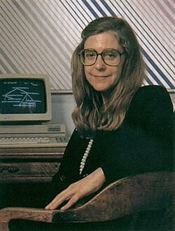

Margaret Heafield Hamilton
Diretora de Software da NASA / MIT (1936 – Presente)
Apollo 11
Software de Voo Seguro
Engenharia
Cunhou o termo Engenharia de Software
Honraria
Medalha Presidencial da Liberdade
Margaret Heafield Hamilton (Paoli, 1936) é matemática, cientista da computação, engenheira de software e empresária.
Foi diretora da Divisão de Software no Laboratório de Instrumentação do MIT, que desenvolveu o programa de voo usado no projeto Apollo 11, software que impediu que o pouso na Lua fosse abortado por falha humana. Você entendeu bem: sem o programa que ela escreveu, nada de "pequeno passo para o homem, grande passo para a humanidade". Foi um grande passo para as mulheres também.
Em 1986 ela fundou sua própria empresa, a Hamilton Technologies Inc com sede em Cambridge. Onde desenvolveu seu paradigma para Sistemas e Design de Software, o Development Before the Fact.
Além de ser creditada por ter criado o termo "engenharia de software", foi uma das desenvolvedoras dos conceitos de computação paralela, priority scheduling, teste de sistema, e capacidade de decisão com integração humana, tais como mostradores de prioridade que viriam a ser o fundamento do design de software ultra confiável.
Foi premiada com a Medalha Presidencial da Liberdade pelo presidente dos EUA Barack Obama, maior honra a um civil daquele país.